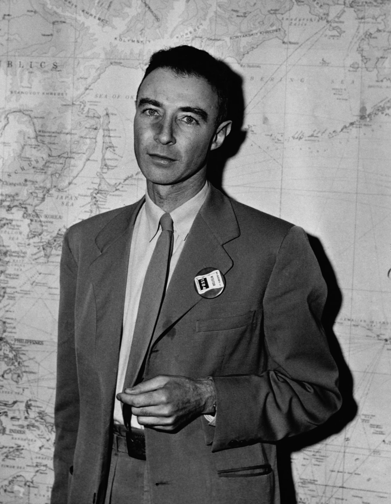

Biografia
Julius Robert Oppenheimer (1904-1967), americano, studiò nelle Università di Harvard, Cambridge e Göttingen. Professore di Fisica all’Università della California, nel 1943 venne messo a capo del Progetto Manhattan per la realizzazione della bomba atomica, e diresse il Laboratorio di Los Alamos. Direttore dell’Institute for Advanced Study di Princeton per un ventennio, dal 1947 alla morte, nei primi anni cinquanta fu messo sotto accusa dalla Commissione per le attività antiamericane, ma fu prosciolto poco dopo.
